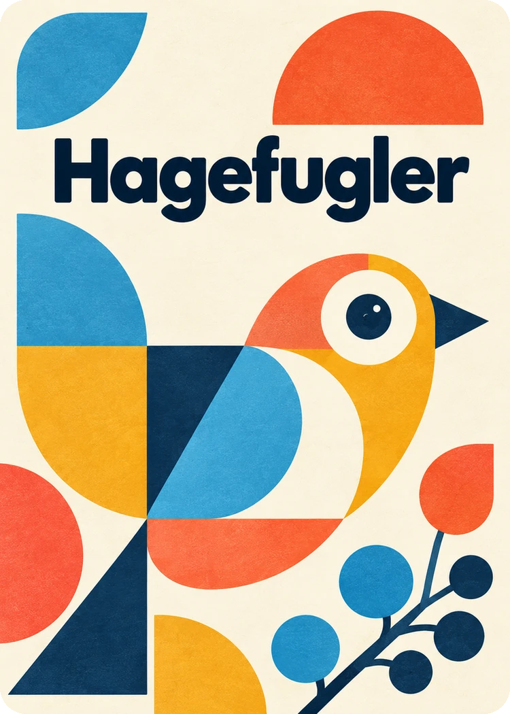

Trykk for å fortsette
Kort 001 av 060
Valget gjelder alle kortene på denne enheten. Avkrysningene dine påvirkes ikke. Trykk på bildet på et kort for å se det stort og bla mellom bildetypene.
Sletter observasjoner, tellinger, frø, kjøp og bonuskort, også i den delte lista. Valgene her beholdes.
Lås opp et kort for å se bildet og teksten. Før du kjøper, ser du bare navnet.
For hver art teller du det høyeste antallet du ser samtidig, ikke alle du ser i løpet av tellingen.

?